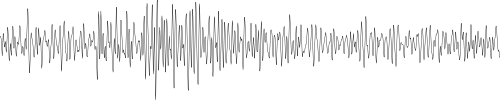
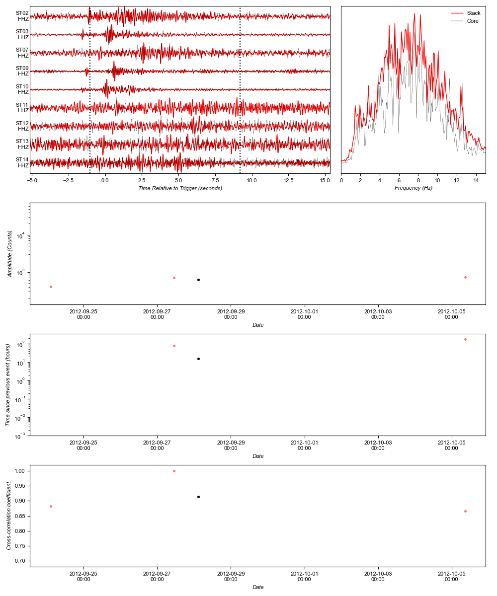

< Cluster 0 | Cluster 2 >
Cluster 1

Number of events: 4
Longevity: 11.25 days
Mean event spacing: 90.04 hours
Median event spacing: 80.38 hours
Mean Frequency Index: 0.47
First event: 2012-09-24T02:34:24.080000
Core event: 2012-09-28T02:38:15.630000
Last event: 2012-10-05T08:41:00.400000
